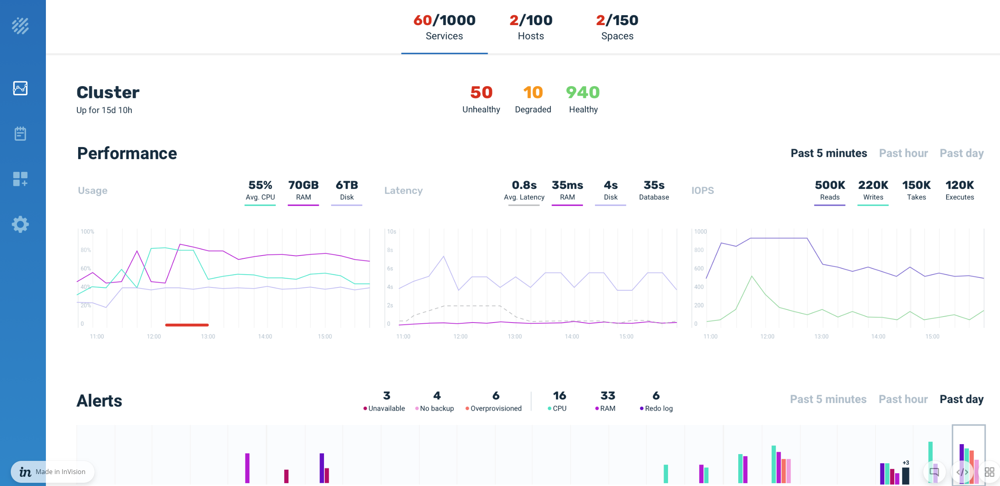

A service in the Ops Manager may represent a
| Icon | Name | Description |
|---|---|---|
| Stateless | Contains one or more microservices. This kind of service may act like a client that interacts with other services. | |
| Stateful | Contains data in a Space instance. A set of stateful services comprise a |
|
| Mirror | A mirror service is stateless and provides asynchronous persistence to ensure that data isn't lost. The mirror acts as a dispatcher, pushing all primary Space partition changes to the database (or any other data storage solution). | |
| Web | Allows deploying web applications using packaged or exploded WAR files. | |
| Spark | ||
|
|
WAN gateway | Replicates services between different clusters for disaster recovery planning and data locality. |
In addition to the main services, you can also deploy the following service sub-type.
| Name | Description |
|---|---|
| MemoryXtend | Service that has been configured for MemoryXtend, and can separate the data in the Space between hot storage (RAM) and warm/cold storage (off-heap RAM or SSD). |
|
|
|
|
|
|
| Polling |
Ops Manager includes graphs that display the following information:
Ops Manager metrics can be ported to InfluxDB or other time series databases, so that you can use external monitoring and visualization tools (such as Grafana) to perform additional analysis.
The service overview shows a summary of all services vs. unhealthy services. You can also view the services sorted by health and severity. Additionally, you can apply filters by service type and RAM utilization, or search for specific services by name. Click a service to drill through to see the individual performance metrics and alerts for that service. For deeper analysis, you can create a dump file of the service logs via the download button in the upper right-hand corner.
In addition to reviewing the performance of individual services, you can drill down to the partition and instance level to review metrics such as CPU usage and memory consumption per specific instance.